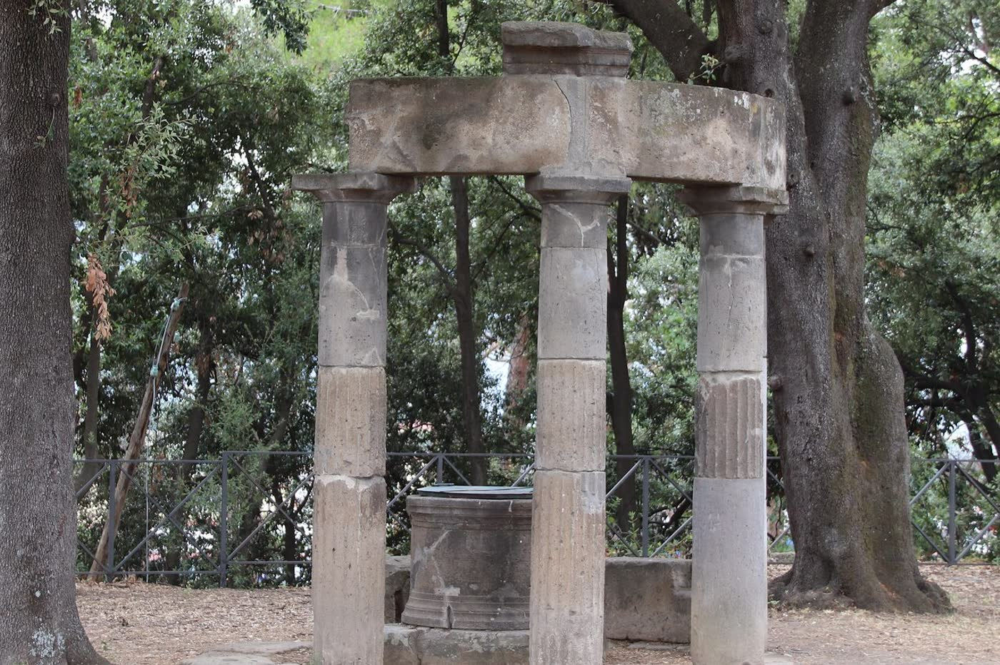

Campania · Italy
Pompeii audio guide
19 stops · offline · plays as you arrive
Placeholder only. This button does not open checkout and does not take payment. Single guides are €2–5, paid once, when purchases open. Email hello@getearwise.com if you want this guide.
Walk the city Vesuvius buried in 79 AD. This Pompeii audio guide plays a short story at each stop, from the sea gate to the Villa of the Mysteries, without a tour group or a phone signal. Download it once. The list below is the route. The narration itself is in the guide.
Stops
- 1
Through the sea gate
Porta Marina, the steep west gate. You come in the way people did two thousand years ago, up from the sea.
- 2
The sanctuary of Apollo
A colonnaded court, and one of the oldest sacred places in the city. A temple of Apollo stood here in the sixth century BC.
- 3
The law court
The basilica beside the forum was Pompeii’s courthouse and the grandest building on the square. A Roman basilica was a public hall, not a church.
- 4
The Forum and the mountain
The long open square, Temple of Jupiter to the north and Vesuvius behind it. Government, markets, and the main temples stood around this space.
- 5
Shelves of the past
The forum granary on the west side, a market hall begun after the earthquake of 62 AD. It now holds finds from the dig, including amphorae and a few plaster casts.
- 6
The House of the Tragic Poet
On Via delle Terme, opposite the Forum Baths. A mosaic on the threshold shows a chained dog and the words CAVE CANEM, “beware of the dog.”
- 7
The House of the Faun
A house that fills a whole block. HAVE, set into the threshold, means “welcome” in Latin.
- 8
The House of the Vettii
On Vicolo dei Vettii. Home of two freedmen brothers, Aulus Vettius Restitutus and Aulus Vettius Conviva, who made their money in trade.
- 9
The Lupanar
A small two-storey brothel. The name comes from lupa, Latin slang for a sex worker. Skip this stop if you are visiting with children.
- 10
A day at the baths
The Stabian Baths, off Via dell’Abbondanza. Among the oldest Roman baths known, from the second century BC.
- 11
Street food on the main road
The thermopolium of Vetutius Placidus on Via dell’Abbondanza, jars still set into the counter.
- 12
The House of Menander
A large family house on Vicolo del Menandro, named for a painted portrait of the poet Menander, not for the owner.
- 13
The Temple of Isis
A colonnaded court for the Egyptian goddess. Her cult reached Pompeii through the trading ports.
- 14
The Large Theatre
Built into the hillside in the second century BC for Greek and Roman comedy and tragedy.
- 15
The Small Theatre
The roofed theatre next door, used for music, song, and mime. Two magistrates paid for it around 80 BC.
- 16
The oldest amphitheatre
Built in 70 BC, about 150 years before the Colosseum in Rome.
- 17
The Large Palaestra
The training ground beside the amphitheatre, built under Augustus, with a pool in the middle and a colonnade around it.
- 18
The Garden of the Fugitives
A vineyard where thirteen people were caught trying to reach the Nocera gate. Their plaster casts lie where they were found.
- 19
The Villa of the Mysteries (optional)
A country house past the Herculaneum Gate, about 400 metres outside the walls. The room to see has the red frieze. Best at the start or end of the day.
On the map
Only this guide is marked: the published start at Porta Marina (40.7489, 14.4849). Other stops are not on this map. Open map